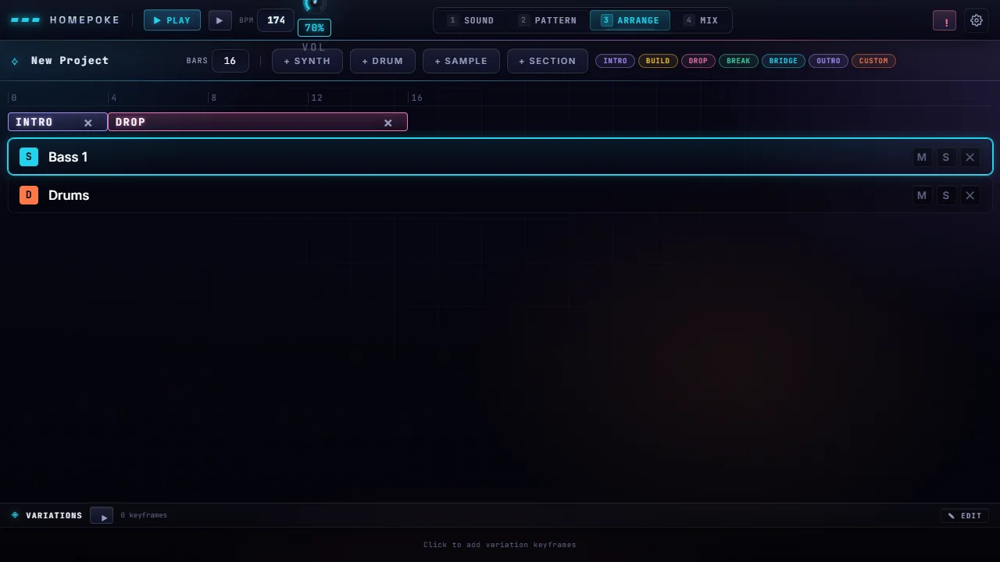
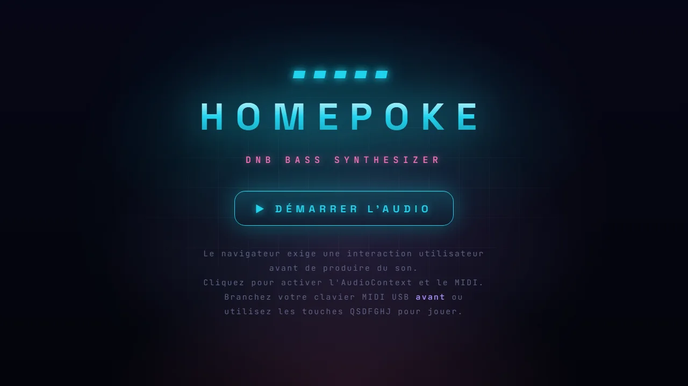

Reese, Neuro, Sub Wobble, Growls : un synthétiseur dans le navigateur dédié aux basses DnB, avec séquenceur, mix, matrice de modulation et générateur de patches IA.
Projet privé — présenté ici en captures. Code et téléchargement non publics.



Oscillateurs super-saw, filtres, enveloppes, matrice de modulation, rack FX.
Pattern, arrangement et mix intégrés.
Joue au clavier MIDI USB ou avec les touches QSDFGHJ.
Générateur de patches pour partir d'un son déjà costaud.